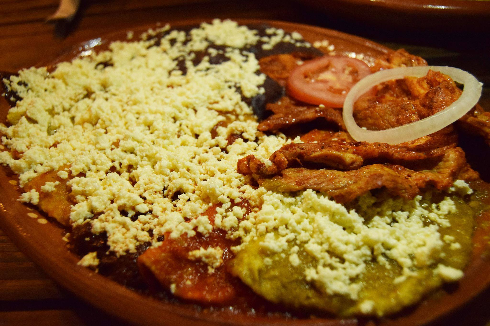

La historia dice que las Enchiladas Potosinas nacieron accidentalmente cuando Doña Cristina Jalomo (1874 – 1973) del municipio de Soledad, que por aquellos entonces era un pueblo lejano de la ciudad de San Luis Potosí y que hoy forma parte de la zona conurbada, llevo su masa de nixtamal al molino del pueblo en el cual también molían chiles cascabel, muy típicos de las huertas de Soledad, al contaminarse su masa con el picor y color de los chiles les dio un sabor muy especial que primero conquisto a su familia, a sus vecinos y finalmente a locales y gente de todo México. Y bueno, el resto es historia, así que si un día van a San Luis Potosí, dense una vuelta por Soledad para probar las autenticas Enchiladas Potosinas, mientras tanto aquí les comparto la receta original que nos proporcionaron en el municipio de Soledad.
ENCHILADAS HUASTECAS
31/Octubre/2019

En la gastronomía mexicana, el maíz y el chile son la base para preparar diversos platillos. Ingredientes que desde la época prehispánica han dado identidad del cuerpo y del espíritu; San Luis Potosí, es uno de los estados más conocidos por ofrecer diversas variedades, su cocina tiene una historia de 12 mil años, comenzando con la cultura chichimeca y después con la llegada de los españoles.
Las Enchiladas Huastecas oriundas de esa región, un platillo primordial que representa parte de la gastronomía del estado a nivel internacional. Constan de tortillas de maíz recién hechas, bañadas en salsa roja o verde, espolvoreadas con queso de aro y adornadas con rajas de aguacate; se acompañan con una sábana de cecina (carne de res) y una guarnición de frijoles refritos negros o bayos.